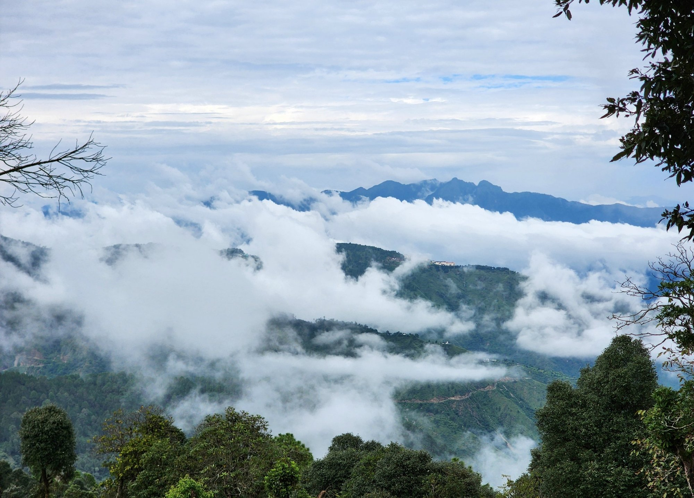

Research
How weather models represent the exchange of heat, moisture and momentum between mountain ground and the air above it, and how to make that representation better.
On improved representation of mountain boundary and surface layer processes in the numerical weather prediction model
Every weather and climate model has to compute how much heat, water vapour and momentum passes between the ground and the lowest model level. Almost all of them do it with Monin-Obukhov similarity theory, which links those fluxes to the vertical gradients of wind and temperature through a set of empirical stability functions.
The theory assumes flat, horizontally uniform ground and fluxes that stay constant with height. None of this is true on a Himalayan slope. Drainage flows, terrain shading and patchy land cover add structure that the functions were never fitted to, and the problem is worst at night, when the air is stably stratified and turbulence becomes weak and intermittent.
In my thesis I check how well the standard formulations hold over mountains, and I test alternatives against the same observations.

The four parts of the work
What do the observations say?
Surface layer characteristics from four contrasting turbulence sites: one in the Central Himalaya, Ranchi on the Chota Nagpur plateau, the CASES-99 campaign in Kansas and Cardington in the UK. Comparing a mountain site with flat ones shows which departures from similarity theory are caused by terrain.
Which stability functions work in the model?
Stable and unstable stability functions implemented in WRF and evaluated over Uttarakhand against tower and station data. The unstable and extreme-weather part is published in Weather and Forecasting; the stable part is in progress.
Can we do better?
A surface layer parameterization of heat, moisture and momentum fluxes fitted to eddy covariance data from the Himalaya, together with a roughness length that changes with conditions instead of staying fixed by land-use class.
What happens as the climate changes?
A 4 km WRF downscaling of CMIP6 projections for the Northwest Himalaya, from a 1985 to 2014 baseline to 2050 under SSP2-4.5 and SSP5-8.5, to see how surface layer variables evolve over the coming decades.
Turbulence measured in the mountains
The theory has to be tested against direct measurements, and those are scarce in the Himalaya. I work with high-frequency turbulence data from a micrometeorological flux tower in the Central Himalaya, developed and maintained by Dr. Piyush Srivastava's group at IIT Roorkee.
A three-dimensional sonic anemometer records the wind and temperature 20 times a second, and an open-path gas analyser adds water vapour and carbon dioxide. Slower sensors record the profiles and the radiation budget that the model is compared against.
Turning those raw records into fluxes a model can be judged by takes several careful steps, shown alongside.
- Raw records at 20 HzThree wind components, sonic temperature, water vapour and carbon dioxide.
- Despiking and quality checksSpikes, sensor faults and flagged records are removed.
- Coordinate rotationThe axes are rotated into the mean wind, so the mean vertical velocity is zero.
- Eddy covarianceCovariances such as w′T′ and u′w′ over 30 minute blocks give the heat and momentum fluxes.
- Stability sortingEach block is classed by ζ = z/L, so stable and unstable hours can be tested separately.
- Model evaluationObserved and simulated fluxes are compared with correlation, mean bias, MAE, RMSE and the index of agreement.
Stability function explorer
In similarity theory the dimensionless gradients of wind and temperature, φm and φh, depend only on the stability parameter ζ = z/L. The choice of function changes the computed fluxes, most of all when ζ is large.
Value at
ζ = 1.00
Coefficients as published: linear form with β = 5 (Dyer 1974); Businger et al. (1971) with the 0.74 neutral Prandtl factor for heat; Beljaars and Holtslag (1991) with a = 1, b = 2/3, c = 5, d = 0.35; Cheng and Brutsaert (2005) with a = 6.1, b = 2.5 for momentum and 5.3, 1.1 for heat; Grachev et al. (2007) SHEBA forms with am = 5, bm = am/6.5, ah = bh = 5, ch = 3. Grachev et al. note their functions apply for bulk Richardson numbers below about 0.2.
- Businger, J.A., Wyngaard, J.C., Izumi, Y. and Bradley, E.F. (1971). Flux-profile relationships in the atmospheric surface layer. Journal of the Atmospheric Sciences, 28, 181–189.
- Dyer, A.J. (1974). A review of flux-profile relationships. Boundary-Layer Meteorology, 7, 363–372.
- Beljaars, A.C.M. and Holtslag, A.A.M. (1991). Flux parameterization over land surfaces for atmospheric models. Journal of Applied Meteorology, 30, 327–341.
- Cheng, Y. and Brutsaert, W. (2005). Flux-profile relationships for wind speed and temperature in the stable atmospheric boundary layer. Boundary-Layer Meteorology, 114, 519–538.
- Grachev, A.A., Andreas, E.L., Fairall, C.W., Guest, P.S. and Persson, P.O.G. (2007). SHEBA flux-profile relationships in the stable atmospheric boundary layer. Boundary-Layer Meteorology, 124, 315–333.
Kilometre-scale WRF over the Himalaya
WRF-ARW is the model I use most, with the urban canopy model and the chemistry module when a problem calls for them, and RegCM for longer regional runs. At kilometre resolution over the Himalaya the results are sensitive to terrain smoothing, land-use classification and the boundary layer scheme, so much of the work is careful sensitivity testing.
Rather than only switching namelist options, I edit and recompile the surface layer routines in Fortran to test alternative similarity functions and flux formulations. Model runs are checked against tower fluxes, automatic weather stations and reanalyses such as ERA5-Land and IMDAA, using correlation, mean bias, MAE, RMSE and the index of agreement.
The same work supports group studies of high-impact weather: the extreme rainfall behind the July 2024 Wayanad landslide, an impact-based heat stress warning framework for a coastal city, and the effect of land-use change on forecasts over Dehradun.